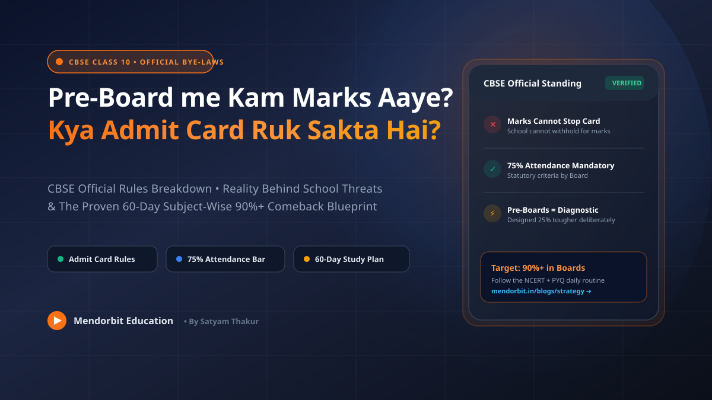

CBSE Class 10 Pre-Board: "Pre-Board me Kam Marks Aaye Toh Kya Admit Card Ruk Sakta Hai?" — Official Rules & 60-Day Comeback Strategy
Every winter, millions of Class 10 students face pre-board anxiety. If your school has warned you that failing or scoring below 50% in pre-boards will forfeit your CBSE Board Admit Card, here is the complete legal truth under official CBSE Examination Bye-Laws, backed by our battle-tested 60-day comeback plan to secure 90%+ in the final board exams.

The Bottom-Line Answer in Plain English:
NO, your school CANNOT withhold or stop your CBSE Board Admit Card due to low marks or failure in Pre-Boards. Under the Central Board of Secondary Education (CBSE) Examination Bye-Laws, pre-boards are internal assessments meant solely for student preparation. As long as your LOC (List of Candidates) was accepted and your attendance is 75% or above, your admit card is your statutory right.
Table of Contents
1. Pre-Board Reality Check: Why Schools Make Papers Unnecessarily Tough
If your Pre-Board 1 result looked heartbreaking — scoring in the 35% to 55% bracket when you were expecting 75%+ — take a deep breath. You are not alone, and your academic potential has not collapsed overnight. To understand why this happens every single year in almost every CBSE affiliated school across India, look at the pedagogical mechanics behind pre-board examinations:
School teachers deliberately craft pre-board papers that are 20% to 30% harder than CBSE’s official blueprint. The goal is psychological: to shake students out of winter lethargy and prevent complacency before February.
In board exams, CBSE markers award step marking generously for correct formulas, diagrams, and units. In school pre-boards, teachers deduct half-marks and full marks aggressively for minute handwriting flaws and brief explanations to force precision.
Pre-boards are not a final verdict on your intelligence. They are high-intensity stress-tests designed to expose syllabus loopholes before the official examiner marks your paper in March.
2. Official CBSE Examination Bye-Laws: Can Schools Stop Your Admit Card?
Many schools hold parent-teacher meetings in December or January where class teachers announce statements like: "Agar Pre-Board 2 me pass nahi hue, toh board ka admit card nahi milega." Let us inspect what the law, high court verdicts, and CBSE circulars actually state:
CBSE Examination Bye-Laws on Admit Cards
Once a school enrols a student and submits their registration in the official List of Candidates (LOC) with the prescribed examination fees paid to the Board, the school acts merely as an administrative custodian. The school possesses no autonomous legal authority to detain or refuse delivery of an Admit Card issued by CBSE.
Explicit Warning to Affiliated Schools
In multiple explicit advisory circulars (including CBSE Public Notices on Admit Card Distribution), CBSE has reiterated that "no affiliated school can withhold the admit card of any student for non-performance in pre-board examinations, internal tests, or unpaid supplementary coaching charges." Violating this can lead to severe disaffiliation penalties for the institution.
The ONLY 2 Legitimate Conditions Under Which An Admit Card Can Be Stopped:
If a student’s registered aggregate attendance falls below 75% without authorized medical condonation approved by the CBSE Regional Officer, the student can be debarred from writing board examinations.
If the student's name was never enrolled in the LOC portal in September/October or their eligibility credentials were invalidated by the Board due to document fraud.
3. Pre-Board Marks vs Actual Board Marks: The Ground-Reality Comparison
Based on historical tracking data of over 10,000+ Class 10 students across CBSE batches, here is how pre-board performance typically correlates with final board results when students execute a structured revision sprint:
| Pre-Board Score | Expected Board Result | Key Driver for Jump |
|---|---|---|
| 33% – 45% (Bare Pass / Borderline) | 75% – 84% in Boards | Mastering NCERT core exercises & repeated PYQs. |
| 46% – 60% (Average Marks) | 85% – 91% in Boards | Eliminating silly calculation slips & diagram labeling errors. |
| 61% – 75% (Good Score) | 92% – 96% in Boards | Standard step-marking presentations and case-based mastery. |
| 76%+ (Top Tier in School) | 97% – 99%+ in Boards | Zero-error speed writing and clean 3-hour mock paper simulation. |
Notice the consistent 20% to 30% upward surge between pre-boards and actual board scores. This happens because board papers are designed to test foundational comprehension across all students, not just the top 2% of a private school.
4. What to Do If Your School Threatens to Stop Your Admit Card
If your school administration or principal is exerting undue mental pressure on you or your parents, follow this calm, formal 4-step action plan:
5. 60-Day Subject-Wise Comeback Strategy (Scoring 90%+ in Boards)
Instead of wasting emotional energy on worry, channel your focus into these actionable subject blueprints designed specifically for the final 60 days before the board exams:
Mathematics (Standard & Basic)
High Scoring- Solve 100% of NCERT Solved Examples: More than 45% of CBSE board questions are direct or slightly modified NCERT examples. Solve every single example by hand.
- Focus on High-Weightage Chapters: Triangles (BPT theorem proof is almost guaranteed), Quadratic Equations, Arithmetic Progressions, Trigonometry & Heights and Distances, and Surface Areas & Volumes.
- Daily Formula Retention Sheet: Create a 2-page formula sheet. Write down Mensuration and Stats formulas every morning before breakfast.
Science (Physics, Chemistry & Biology)
Conceptual Clarity- Physics: Master the Ray Diagrams for Concave/Convex mirrors and lenses. Practice sign conventions for numericals in Light and Electricity (Ohm's law & Joule's heating).
- Chemistry: Write and balance all chemical reactions from Chapter 1 to 4. Practice color change indicators (FeSO4, Pb(NO3)2 decomposition) and homologous series.
- Biology: Draw clean diagrams with arrows: Human Alimentary Canal, Heart, Nephron, and Female Reproductive System. Practice Mendel’s Monohybrid and Dihybrid crosses.
Social Science (History, Geography, Civics, Economics)
Structure & Points- Point-Wise Answer Format: Never write long paragraphs. Write 3 distinct points for 3-mark questions and 5 bullet points with bold sub-headings for 5-mark questions.
- Map Work (Guaranteed 5 Marks): Practice the official CBSE map syllabus twice a week (Major dams, soil types, thermal power plants, and Indian National Movement centres).
- Keywords Matter: Examiners look for NCERT phrases (e.g., "Satyagraha", "Decentralization", "Collateral", "Human Development Index"). Underline them with a pencil.
English (Language & Literature)
The Percentage Booster- Writing Formats: Memorize exact formats for Formal Letter and Analytical Paragraph. Format carries 1 to 2 free marks.
- Literature Character Sketches: Read NCERT chapters thoroughly. Focus on central themes and the perspective of characters (Lencho, Nelson Mandela, Valli, Bholi).
- Reading Comprehension: Solve two unseen passages every Sunday to build scanning speed for inferences.
6. Daily 5-Hour Study Routine & 3-Hour Mock Paper Strategy
You do not need to study 14 hours a day to score 90%+ in CBSE Class 10. You need 5 uninterrupted, high-concentration hours with structured active recall:
The Golden Sunday 3-Hour Mock Rule
Every Sunday between 10:30 AM and 01:30 PM (the exact CBSE Board examination time), sit on a chair and table without mobile phones or book access. Solve an official CBSE Sample Question Paper on ruled answer sheets. This builds mental stamina and removes panic during the real exam.
7. Frequently Asked Questions
Direct, transparent answers regarding CBSE Class 10 rules and admit card distribution.
Need 1-on-1 Guidance for Class 10 Boards?
Connect with Mendorbit mentors for chapter doubts, formula sheets & revision strategies.
Recommended Blogs & Guides
View All Blogs ➔CLAT 2027 Admit Card Out: Download Link & Exam Guidelines
Consortium of NLUs direct Admit Card portal link, step-by-step instructions, and test day rules.
Fundamental Rights (Articles 12–35): Part III Indian Constitution
In-depth constitutional analysis of Fundamental Rights, writs, and landmark Supreme Court verdicts.
Class 10 Maths & Science Revision Sheets & Formulas
Free handwritten formula cheat-sheets and NCERT chapter summaries verified by Mendorbit mentors.